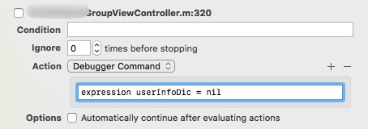
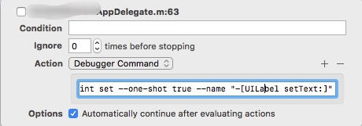
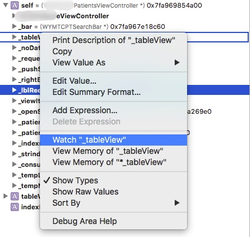
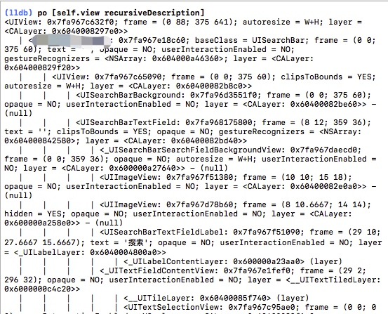

expression语句
不用重新运行程序直接实现代码效果

描述
可以动态的改变条件，语法是
expression xxx = "xxx"后面是语句代码,类似程序中的代码并且支持加{}的判断等等语句。使用方法：
- 调试台去写这个语句
- 加断点去添加
action。
Symbolic Breakpoint
描述
符号断点，可以针对某一个方法(函数)设置断点并暂停执行；有时候，我们并不清楚会在什么情况下调用某一个函数，那我们可以通过符号断点来跟踪获取调用该函数的程序堆栈。

使用方法
- 方法一
添加符号断点，比如如下所述-[UILabel setText:]

还可以添加condition语句 类似如上所述
- 方法二
直接在指定的语句添加断点加入
action语句，如图所示
breakpoint set --one-shot true --name "-[UILabel setText:]"one-shot是一个临时断点，一旦触发后就自动删除
跳过断点所指向的代码
方式一

移动手柄实现 接下来就可以在控制台中写expression语句
expression jumpAstronaut(animated:false)
方式二
直接编辑断点添加action语句

thread jump --by 1是跳过一句代码的意思。
watchPoint
观察指针，值发生改变的时候自动暂停。

右键某个属性，添加watchPoint，然后左侧会出现观察指针断点监测_tableView的变化，如下所示

创建别名
command alias poc expression - l objc -O --
poc 就可以直接代替后面的语句，可以简化常用的命令行语句。可以通过内存地址去获取对象
Objective-C
po 指针可以直接打印出对象

Swift
不能把数字当成指针去像OC一样打印出对象，要使用
expression - l objc -O -- 0x7fa967d781191548b60转换为OC语言。 如果觉得这个语句太臃肿，可以为语句创建别名比如command alias poc expression - l objc -O --之后就可以直接poc 指针就可以达到oc当中同样的效果。
获取图层树
Objective-C
调用
po [self.view recursiveDescription]打印出类似于这样的图层树。
Swift
不能这么直接打印出图层树（swift不允许去调用未定义的函数），如果要让swift去像OC一样打印出类似于这样的图层树。
调用语句```一定要加入反括号(反括号就像预处理器一样，它表示先评估其在当前帧中的内容，并插入结果，然后我们可以评估其余部分) 才能编译通过。
unsafeBitCast查询对象的调试描述
当只有指针，查看对象描述的时候在swift中可以使用 unsafeBitCast函数，给他一个内存地址，他不安全是因为它依赖你来提供正确的类型。
po unsafeBitCast(指针,to:ScoreBoardView.self)
还可以可以直接查看view的frame
po unsafeBitCast(指针,to:ScoreBoardView.self).frame同理OC中可以更方便的实现根据指针对对象进行相应的调试，比如更改 label 的内容
(lldb) expression [(UILabel*)0x7fb2c5f0fd70 setText:@"hello"]; 但是内存地址前面要跟相应的类型要不然会执行失败报错
error: warning: receiver type 'long' is not 'id' or interface pointer, consider casting it to 'id'刷新屏幕的帧缓存区
如果写了expression语句之后界面没有及时刷新，但是又不想去重新运行代码，那么可以使用表达式
Swiftexpression CATransaction.flush()
OCexpression [CATransaction flush]刷新屏幕帧缓存区。
Advanced Debugging with Xcode and LLDB
Copyright © 2015 Powered by MWeb, Theme used GitHub CSS.